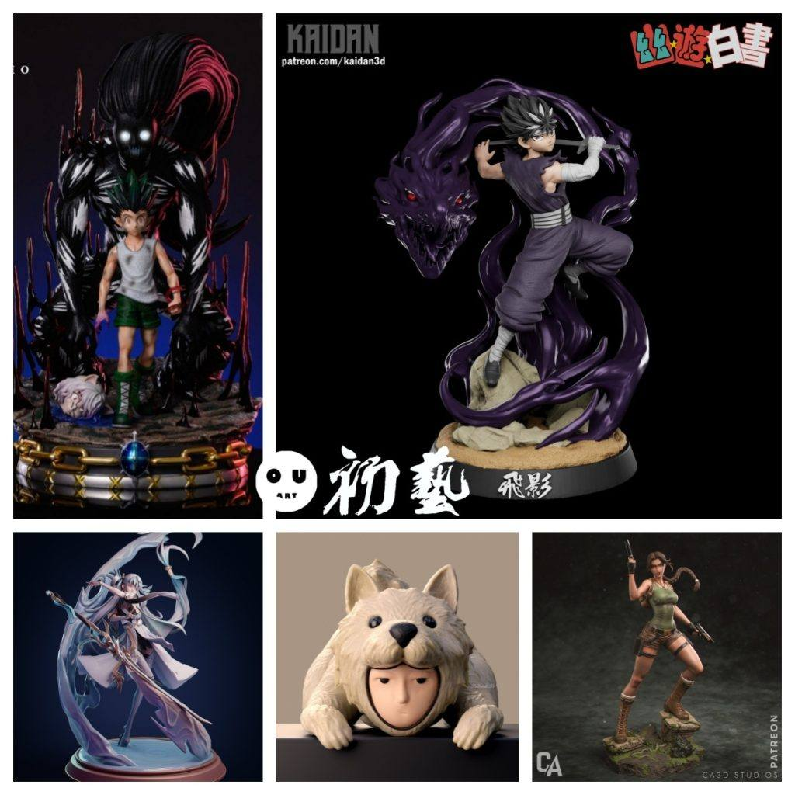
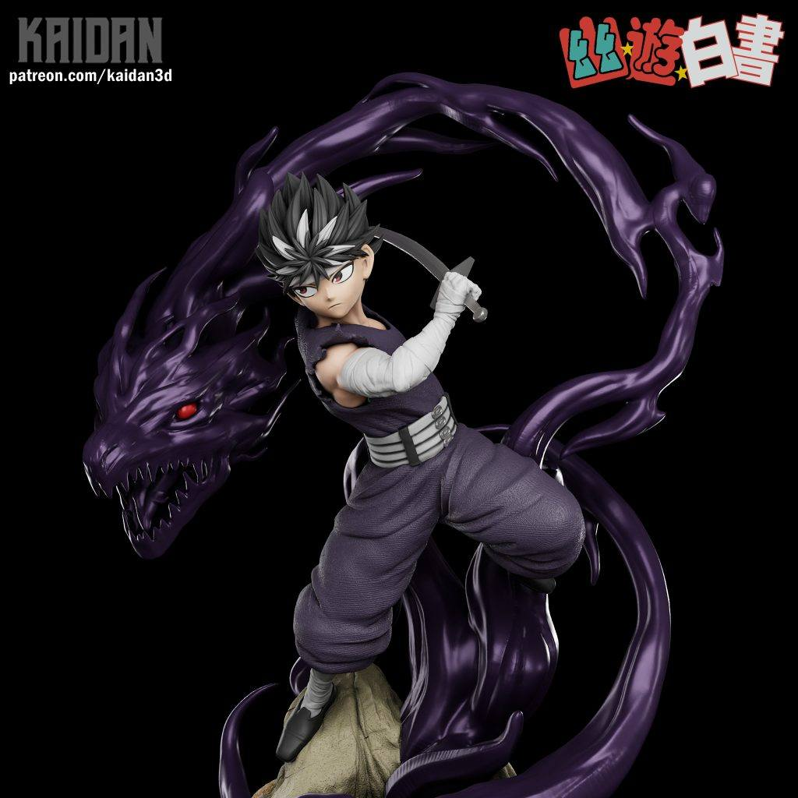
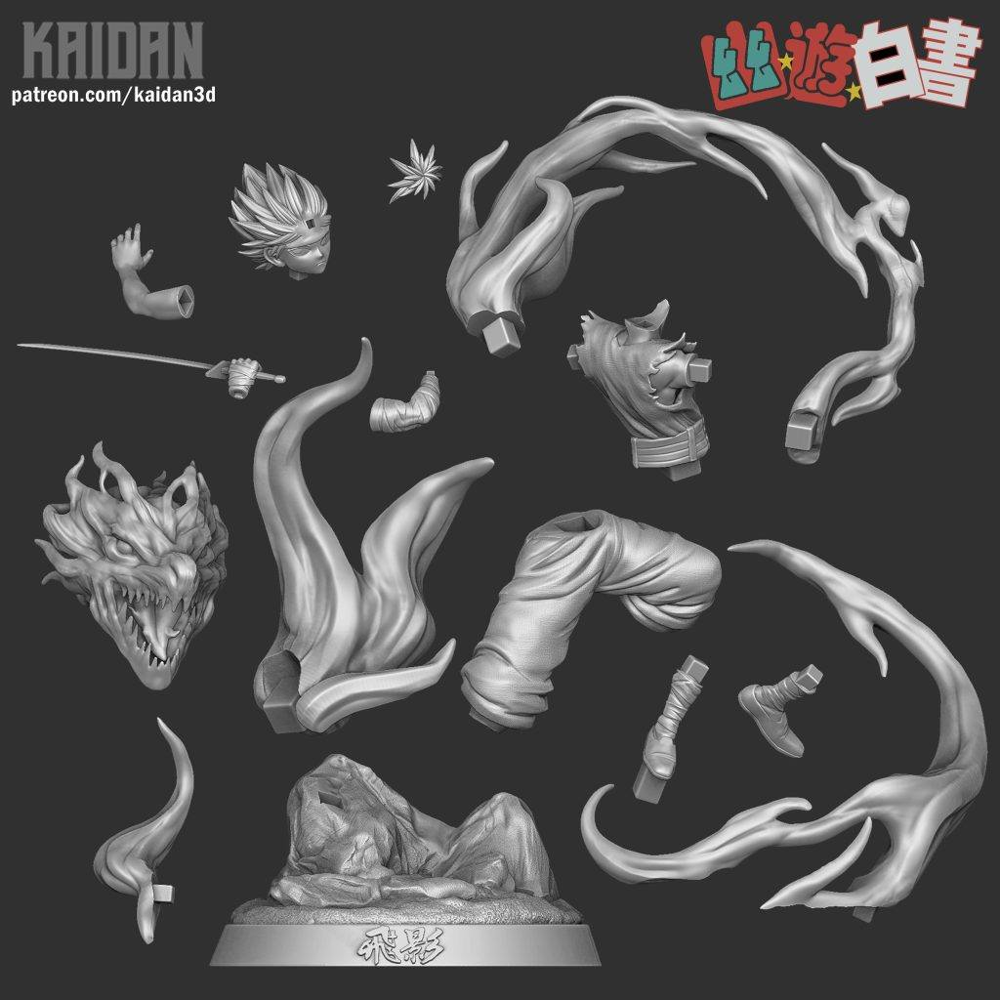
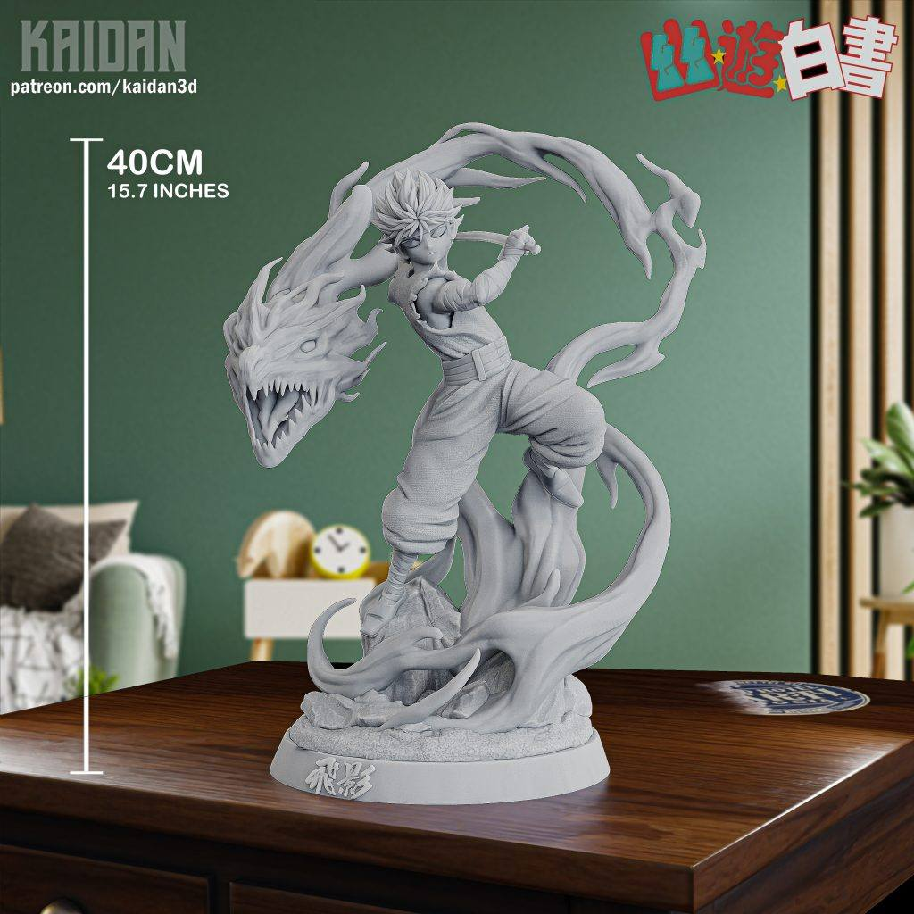
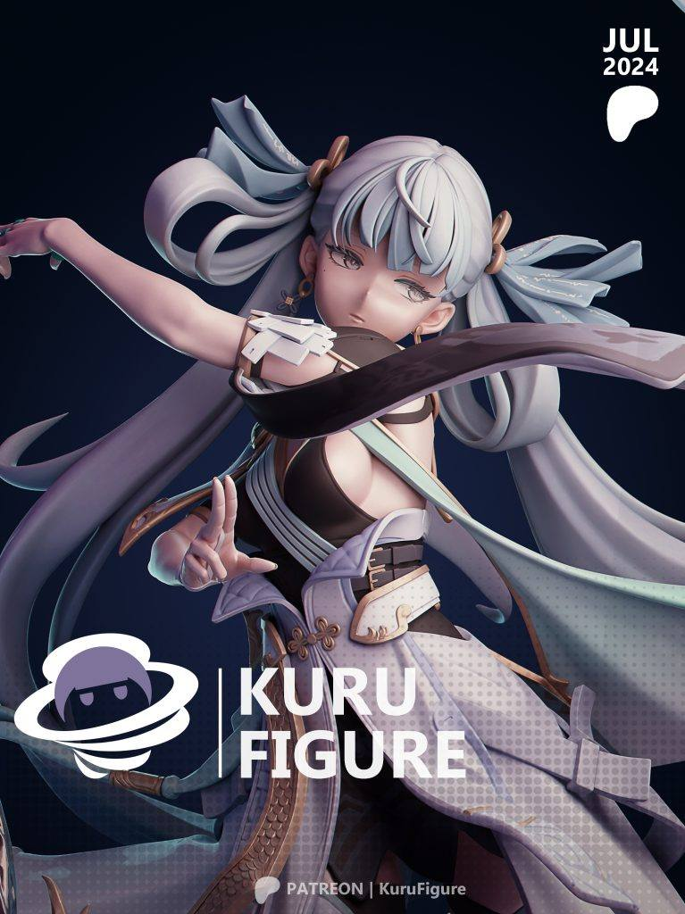
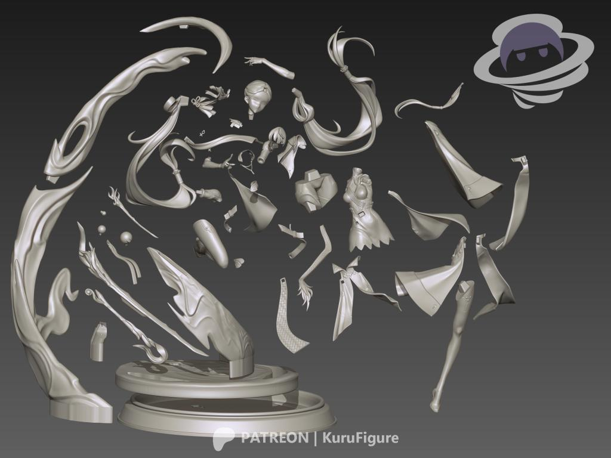
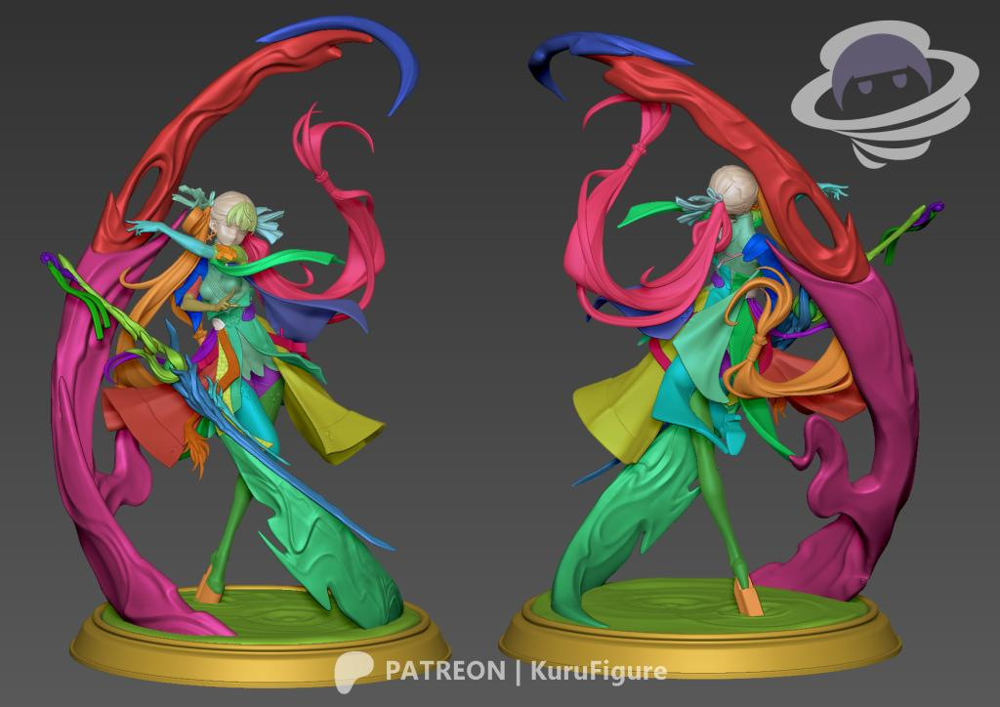
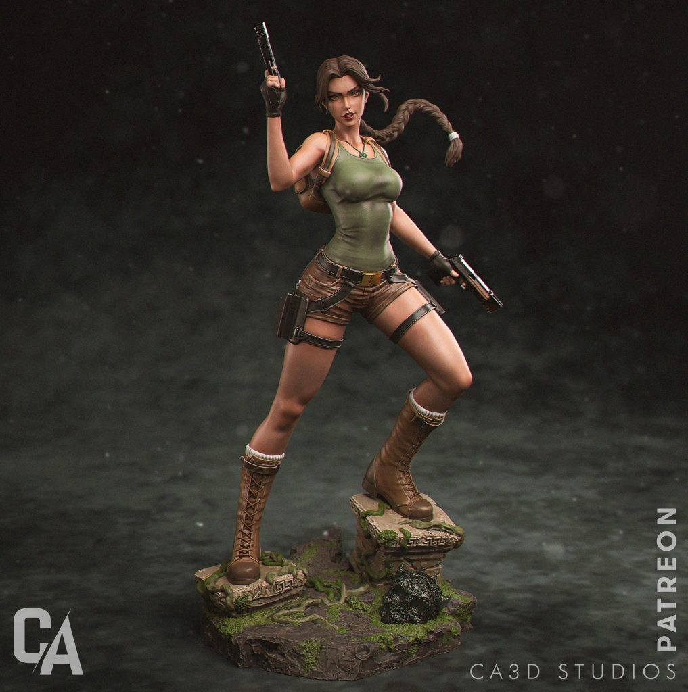

模型分享
11月13日STl图纸文件分享

1.猎人——小杰，模型精度普通，场景还不错。
链接：https://pan.baidu.com/s/1yH5w6S6I6Xy1aYmmuVauFw
提取码：zwwz

2.幽游白书——飞影，精度较好，动态也不错。
链接：https://pan.baidu.com/s/130roHgmCn8IXC6vVoltSiw
提取码：ke2o



3.鸣潮-今汐，之前有群友分享过，看了一下模型还是蛮好的，整理在帖子中。
链接：https://pan.baidu.com/s/1TjMZnCxLRDnQcWmV7RxWzg
提取码：wfyk




4.一拳超人——警犬侠，比较好玩的小模型，fdm和光固化都合适打印。
链接：https://pan.baidu.com/s/1cMAUrDI80VbwCIBmRupSSA
提取码：qcbl

5.劳拉，分享好几个劳拉的模型，精度动态都不同，这个也还算不错的一个，分件也比较合理。ca3d工作室的模型素质也都比较稳定。
链接：https://pan.baidu.com/s/1XRj4vhE1MMJdFquhsOcFRw
提取码：rq79

以上内容仅供个人使用（非商用）
ONLY for PERSONAL (NON-COMMERCIAL) use.
加群获得更多免费模型！